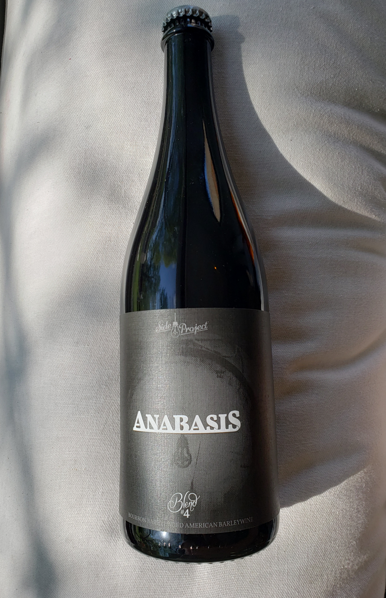

HOME
ALES
Anabasis Ale
Side Project Brewing Co.
Anabasis is a Barleywine that was brewed with American malts and hops, but fermented with a strong English Ale strain. This Barleywine was aged for 18 months in a single Wine and Cheese Place Blanton's barrel before being bottle conditioned for several more months before being released.
Located in St. Louis, Mo, what began as a dream and a side project has now grown into a 100% barrel-aged brewery. Passion, experimentation and patience drive the creation of Side Project Brewery's rustic Saisons, Wild Ales and Spirit Barrel-Aged Ales.
Check out their site HERE 